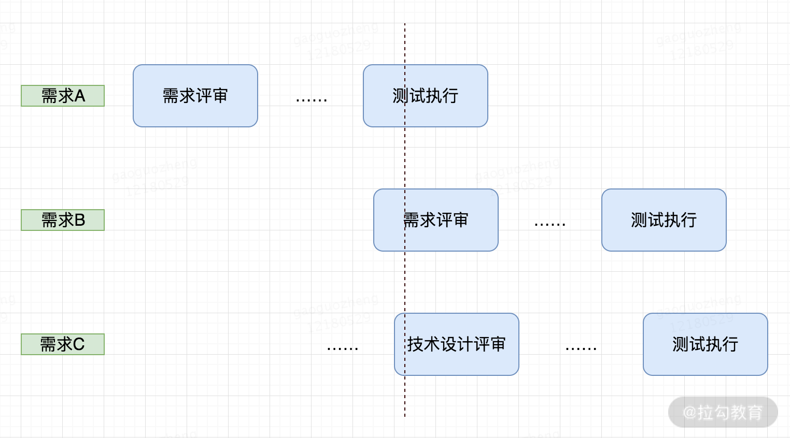

- 00 开篇词 既往不恋，当下不杂，未来不迎.md.html
- 01 微服务架构有哪些特点？.md.html
- 02 微服务架构下的质量挑战.md.html
- 03 微服务架构下的测试策略.md.html
- 04 单元测试：怎样提升最小可测试单元的质量？.md.html
- 05 集成测试：如何进行微服务的集成测试？.md.html
- 06 组件测试：如何保证单服务的质量？.md.html
- 07 契约测试：如何进行消费者驱动的契约测试？.md.html
- 08 端到端测试：站在用户视角验证整个系统.md.html
- 09 微服务架构下的质量保障体系全景概览.md.html
- 10 流程规范篇：高速迭代的研发过程需要怎样的规范？.md.html
- 11 测试技术篇：测试技术这么多，我该如何选型？.md.html
- 12 测试技术篇：如何提升测试效率？.md.html
- 13 测试技术篇：专项测试技术解决了哪些专项问题？.md.html
- 14 CICD 篇：如何更好地利用多个“测试”环境？.md.html
- 15 CICD 篇：如何构建持续交付工具链？.md.html
- 16 度量与运营篇：如何做好质量和效率的度量与运营？.md.html
- 17 度量与运营篇：如何度量与运营效率和价值？.md.html
- 18 组织保障篇：质量是设计出来的.md.html
- 19 软件测试新趋势探讨.md.html
- 20 结束语 QA 如何打造自身的核心竞争力？.md.html
- 捐赠
10 流程规范篇：高速迭代的研发过程需要怎样的规范？
上一课时，我讲解了微服务质量保障体系的全景概览。本课时我主要讲解流程规范——高速迭代的研发过程需要怎样的规范呢？
业务流程阶段
众所周知，产品研发是为业务服务的。在深入讲解产品研发流程之前，我们先整体看下业务流程，分为 3 个阶段：
- 产品研发阶段。这个阶段会做市场调研，根据调研结果决定是否设计和开发新的产品（或进行产品改良），随后进行产品的研发，并将产品发布到线上。
- 日常运营/运维阶段。是指产品发布上线后，通过各类运营手段和运维手段向客户提供符合需求的、高可用的产品与服务。其中，运营常见的活动有拉新、留存、促活等。运维常见的活动有容量规划与实施、服务集群维护、系统容错管理等。
- 售后服务阶段。它主要由客服人员或售后工程师主导，包括解答或解决用户在使用产品后产生的疑问和投诉等。
产品研发阶段是指需求产生到需求上线的过程，这阶段是测试人员的“主战场”。但这三个阶段共同组成了整个业务流程，要做到全流程质量保障，需要具有全局思维。即积极影响产品研发阶段，推动流程规范的制定、建设和完善；对日常运营/运维阶段和售后服务阶段保持关注，定期收集这两个阶段中遇到的问题，做好协同和配合，思考在产品研发阶段如何预防或闭环解决这类问题。

关注圈&影响圈
产品研发流程规范要点
好的流程规范（Process specification) 能够保障业务稳步进行，使各部门各司其职。要想使产品研发阶段能够有条不紊地进行，就需要制定和执行流程规范。产品研发流程大体分为需求阶段、研发阶段、测试阶段、发布阶段等，每个阶段都需要有相应的流程规范，从而把需求变成软件产品并发布到线上。
关键角色
流程规范是用来约束有关部门和人员的，在产品研发流程中主要有如下关键角色。
- 项目经理（Project Manager，简称 PM）：通常情况，如果业务或项目设置了项目经理的角色，那么像日常的项目管理、流程规范制定等工作一般由项目经理来主导，其他协同部门有义务配合。如果没有设置项目经理这样的角色，流程规范的制定由各协同方共同商议决定，其中产品研发流程的规范绝大多数都由测试部门主导制定，一般由测试部门编写初稿，与协同部门共同商议后确定。本文中默认项目中并未设置项目经理的角色。
- 产品经理（Product Manager，简称 PM）：主要负责对需求进行分析、编写需求文档、组织需求文档的评审、协调项目资源、对交付结果进行验收等工作。
- 研发人员（Research and Development engineer，简称 RD）：负责编写技术设计方案、编码（包括与协同方联调和自测），最终把交付物提交给测试人员进行测试。测试完成后把交付物发布到线上（对于发布环节来说，不同的公司中该环节的操作人员不一样，比如可能的发布人员有 SRE、测试人员、研发人员等，本文中，发布环节假定由研发人员操作）。
- 质量保障人员（Qualtiy Assurance，简称 QA，很多时候通俗表达为测试人员）：对于当前需求来说，主要负责确保该需求的交付物符合产品需求。
SRE是指Site Reliability Engineer (网站可靠性工程师)。他是软件工程师和系统管理员的结合，一个SRE工程师基本上需要掌握很多知识：算法、数据结构、编程能力、网络编程、分布式系统、可扩展架构、故障排除等。
关键原则
微服务架构下，一个业务所具有的微服务数量多，服务与服务之间存在着复杂的交互关系，不同服务分布在不同的团队中维护，一个需求通常需要多个微服务团队参与开发，基于这样的背景，在制定流程规范时会有如下考虑：
- 各职能角色必须有 Owner 角色
一个小型需求的产品研发过程，需要产品经理、研发人员和测试人员等角色的协同。一个大型需求，往往是由几个小型需求组成，同一个职能角色之间会有多个人员进行协同，因此，为了有利于协同，降低协同风险，应在每一个角色中设置 Owner 角色。基于此，Owner 角色在一定程度上需要有一些项目管理的意识、知识和技能。
- 重评审和讨论，群策群力
产品研发过程是一个脑力密集型的工作，复杂度高，大量的实践统计表明，在大规模软件开发中超过 50% 的错误来自需求分析和技术设计阶段。为了最大程度地降低风险，在其流程中需要加大评审和讨论环节的投入，通过多方审查的机制来保证过程质量、提高研发效率，所以，需求阶段和研发阶段的早期流程应有好的规范。
- 前紧后松，提前应对风险
高速迭代的研发过程，需要在研发过程的早期，前置发现更多的问题，使后面过程更顺畅，尽量达到“前紧后松”的效果，以降低研发过程的复杂度和风险。
- 关键节点严格把控
产品研发的子阶段之间体现了承上启下的作用，主导方会发生变化，所以对这些节点要严格把控，避免将风险和问题遗漏到以后解决。
规范制定&落地
规范的制定没有特定的频率限制，通常情况下，在刚开始进行产品研发时会制定一个粗颗粒度的规范。在之后的项目过程中，出现了现有规范不能解决的问题，则会先商讨出来解决方案，再逐步把相应的流程规范明确下来。一个规范制定出来后，首先优先在测试部门内部进行评审，然后再与协同方达成共识，最后按照一定的节奏开始推广执行。
在将规范进行落地后，应不断跟进执行情况，针对执行不到位的地方进行分析和改进，从而形成 PDCA 循环。
PDCA 循环是美国质量管理专家休哈特博士首先提出的，由戴明采纳、宣传，获得普及，所以又称戴明环。全面质量管理的思想基础和方法依据就是 PDCA 循环。PDCA 循环的含义是将质量管理分为四个阶段，即 Plan(计划)、Do(执行)、Check(检查) 和 Action(处理)。在质量管理活动中，要求把各项工作按照作出计划、计划实施、检查实施效果，然后将成功的纳入标准，不成功的留待下一循环去解决。这一工作方法是质量管理的基本方法，也是企业管理各项工作的一般规律。
当然，规范的制定与落地，还需要结合人员配备情况、工具建设情况协同来看。
规范如何呈现？
流程规范涉及多方协作，其呈现形式的第一要点应为通俗易懂，一图胜千言，建议采用流程图的方式来展现，比如使用泳道图。

泳道图示意图
泳道图，一种 UML 活动图，能够清晰体现出某个动作发生在哪个部门，常见工具有 StarUML、Rose、Visio 等。泳道图在纵向上是部门职能，横向是岗位（有时候横向上不区分岗位）。绘图元素与传统流程图类似，但在业务流程主体上，通过泳道（纵向条）区分出执行主体，即部门和岗位来。
流程规范中对关键字眼或者需要重点关注的信息，需要用醒目的颜色或粗体标记出来。存放流程规范的文档要放在人人可以访问到的地方。
基于此，产品研发阶段的流程可以包含如下内容：
产品研发阶段
产品研发阶段又进一步分为需求阶段、研发阶段、测试阶段、发布阶段等。

（1）需求阶段：产品需求评审
产品需求评审是产品研发阶段中非常重要的环节，通过它可以确保需求表述上没有歧义。需求文档通常的表现形式是产品需求文档（PRD）或市场需求文档（MRD），它们也是技术设计文档和测试设计文档的重要输入，所以这一环节是后续所有工作的基础。
评审要点
通常来说，需求评审必须要确保对于需求的说明没有二义性。除此之外，对于需求还应该满足如下质量要求。
- 完备性：需求是否包含了所有的正常场景，对异常场景的考虑是否足够？UI 设计图和提示信息等是否完整、友好？
- 易理解：需求的表述是否具有二义性，是否使用了结构化的描述，流程类需求是否具有清晰的流程图？
- 可行性：需求中的功能是否具有可操作性，能否通过现有的技术实现？
- 一致性：需求是否与现有功能存在冲突，存在冲突时是否有兼容逻辑？
- 可测试性：需求中的功能要求是否有对错的评判，需求中的非功能要求是否具备验证的标准和方法？
常见的需求表述问题有“同线上逻辑”“同已有逻辑”，或者一句话的概况描述，如“每种状态都需要处理”，却不说明一共有几种状态，这些都非常容易产生理解上的偏差，应该予以杜绝。
其中，测试人员尤其要重视需求的可测性。 早期提出可测试性方面的问题和风险，可以及早应对，从而降低项目风险。否则，到了后续的环节才发现需求不可测，这可能会导致需求变更或技术实现方案的变更，这对质量和效率的影响就太大了。
测试人员如何参与需求评审？

对于测试人员来说，在要进行需求评审或技术设计评审时，通常情况下还在另外一个需求的测试执行过程当中。测试执行过程通常需要投入较高的专注度，所以很多测试人员最最容易出现的情况是，弱化需求评审或技术设计评审环节，投入度较低，等其他需求测试完成了再花精力去熟悉它。 殊不知，这就造成了长期的恶性循环。正确的做法是，强化需求评审或技术设计评审环节，投入较多的精力，前置思考好一个需求中的重点、难点、风险点，提前应对。如果与测试执行时间有一定的冲突，则可以优先投入更多的个人时间来化解，同时在后续的测试执行过程中留有一定的 buffer，几个需求过后，你就会进入一个良性循环。对其他关键的评审环节，如技术设计评审也同样适用。
（2）研发阶段：技术设计评审
技术设计主要评审是否满足业务需求的功能和非功能质量属性，以及发布方案是否完备。
评审要点
- 正确性：技术设计是否可以满足业务需求中的全部功能要求？对异常情况的考虑是否充分？
- 可测性：技术设计是否可测性？预期结果是否稳定？
- 非功能性：是否考虑了安全性、性能、稳定性、扩展性、可靠性等非功能质量属性？
- 兼容性：对不同形态和版本的终端是否兼容？对上下游的服务和数据是否兼容？
- 发布方案：部署逻辑设计是否合理？是否需要对数据结构、缓存、各类配置等进行操作？功能是否具备可回滚的能力？灰度计划是否合理？对服务的关键业务指标和技术指标是否做了监控和告警配置？应急预案有哪些，如何应对？预计的发布时间是如何安排的，需要哪些人员协同，等等。
（3）测试阶段：测试设计&评审
测试阶段主要分两部分，测试设计阶段和测试执行阶段，测试设计阶段主要是进行测试方案和用例的设计，测试执行阶段主要是在提测后，对测试方案或用例进行执行的过程。
测试用例评审
同样地，测试用例的质量关系到测试执行的质量和测试工作本身的质量。提高测试用例质量，可以通过两种方式，一是尽量将测试用例模板进行标准化；二是对用例进行评审。测试用例评审时间过早和过晚都不好，一般应在提测前 2 天左右的时间完成为宜。
评审要点
- 测试范围：测试用例是否覆盖了业务和技术的需求，对于已有功能是否进行了必要的回归？
- 异常情况：用例是否考虑了非常规操作或其他异常情况？
- 易读性：测试用例是否包含前置条件、操作步骤和期望结果等必要信息？
- 非功能性设计：针对非功能性的需求和技术设计，测试用例是否设计充分？
（4）测试执行阶段和发布阶段
如果前面的阶段完成得较好，测试执行阶段和发布阶段就会轻松很多。在这两个阶段，只需要按计划执行，出现风险时要及时并充分地暴露出来。
其中，测试执行阶段会涉及缺陷管理、测试总结与分析、测试报告编写等工作，这些是测试人员的看家本领，此处不再赘述。发布阶段需要前置准备发布内容、采用既定的发布策略，发布完成后实时观察线上日志、并进行线上回归。发布过程如果出现问题，切忌不要在线上解决问题，应立即回滚。线上回归完毕后，需持续关注监控指标，对告警进行及时响应。
这里给出了产品研发的流程图，从该图中可以看出来各个职能角色的关键活动和活动状态流转。其中，所有的“菱形”环节都是需要 PM、RD、QA 三方参与的。

产品研发阶段流程规范
实践经验和认知
好的流程规范能够保障业务稳步进行，使各部门各司其职。但它也不是万能的，这里给出一些实践经验和认知，供你参考：
- 不要照搬其他团队或项目的流程规范，应充分理解每一环节的意图，制定和演化适合所在业务或项目的流程规范。因此，并非越完善越好，适合团队当前阶段的流程规范才是好的流程规范。
- 流程不可能穷举所有情况，抓住核心要点即可，除此之外，需要产品、研发、测试团队的工程师素养发挥重要补位作用。
- 人的习惯是最难改变的，在新增规范或者变更规范时，落地节奏上要柔和些，比如可以给出一个适应期，适应期过后再严格执行。
- 多年的测试经验告诉我，流程规范很容易建立，且往往会越来越庞杂，执行的过程中就会打折扣，所以需要持续运营，或者用一些工具来减轻执行负担，比如Jira、禅道、redmine等。
总结
本节课我首先介绍了业务流程的三个阶段：产品研发阶段、日常运营/运维阶段、售后服务阶段。其中产品研发阶段是测试人员的主战场，所以测试人员应积极影响产品研发阶段，推动流程规范的制定、建设和完善，同时对日常运营/运维阶段和售后服务阶段保持关注。
其次讲解了产品研发流程中的关键角色（PM、RD 和 QA），制定规范时的关键原则，如各职能角色要有 Owner 角色，整体把控该职能角色的协同，重视评审和讨论环节，提前应对风险，做到前紧后松，并对关键节点的流转严格把控。
最后我阐述了产品研发阶段中的关键步骤，分别是不同阶段中的评审环节以及它们的评审要点。后面我也给出了我在流程规范方面的实践经验和认知，供你参考。
你所负责的项目或业务，产品研发阶段的流程规范是怎样的？你对流程规范有着怎样的理解和困惑，请写在留言区。同时欢迎你能把这篇文章分享给你的同学、朋友和同事，大家一起来探讨。
相关链接 流程规范概念：https://wiki.mbalib.com/wiki/%E6%B5%81%E7%A8%8B%E8%A7%84%E8%8C%83 https://concisesoftware.com/software-development-process/ 项目管理：https://www.pmi.org/pmbok-guide-standards
© 2019 - 2023 Liangliang Lee. Powered by gin and hexo-theme-book.